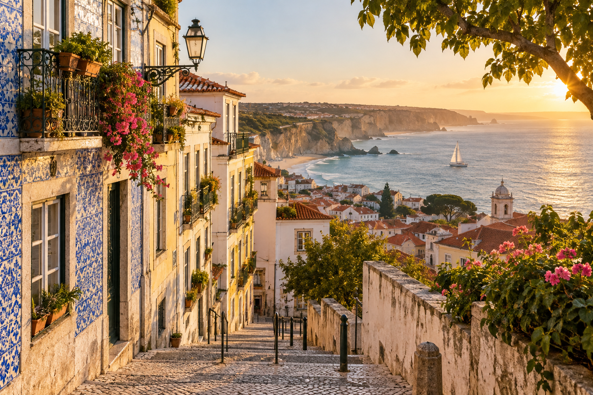
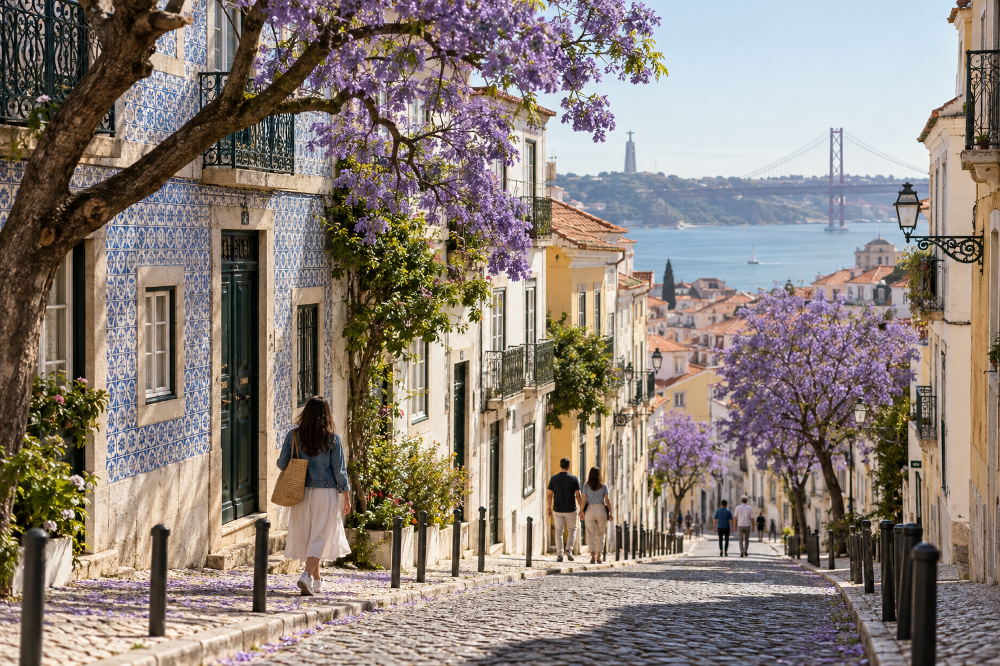
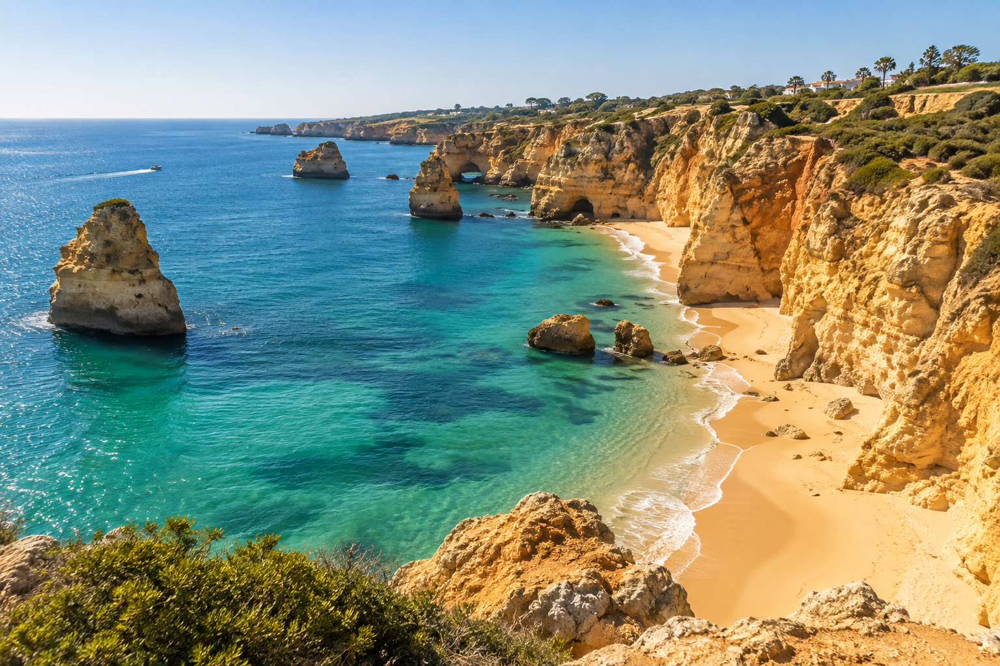

Best Time to Visit Portugal: Weather, Crowds and Costs
Choosing the best time to visit Portugal is harder than simply finding the warmest month. A sunny week in the Algarve can feel very different from the same week in Porto. Summer may sound ideal until you add higher hotel demand, crowded beaches, hot afternoons, and busy attractions.
When I compare Portugal travel dates for RoamPlans, I look at three things together: weather, crowds, and cost. Looking at temperature alone can lead to the wrong choice. A traveler planning long days of sightseeing in Lisbon may prefer different conditions from someone booking a beach vacation in the Algarve.
For many first-time visitors, April to June and September to October offer a strong balance. The weather can be comfortable for sightseeing, daylight is useful, and you can often avoid some of the pressure of the busiest summer weeks. However, there is no single best month for every traveler. Your route and travel style should decide.
Quick Answer: When Is the Best Time to Visit Portugal?

For a first trip that combines cities and sightseeing, consider spring or early fall.
For beaches and the warmest summer atmosphere, choose June through September.
For fewer visitors and a more budget-focused city trip, consider November through March, while accepting a higher chance of cooler or wetter weather.
| Travel Goal | Good Time to Consider |
|---|---|
| First Portugal trip | April–June or September–October |
| Lisbon sightseeing | Spring or fall |
| Porto sightseeing | Late spring or early fall |
| Algarve beaches | June–September |
| Douro Valley | Spring or early fall |
| Lower crowds | November–March |
| Lower-season prices | Late fall and winter |
| Hot weather | July–August |
| Road trip | Spring or fall |
| Walking-heavy trip | Spring or fall |
These are planning ranges, not guarantees.
Weather can change from year to year, and the best dates depend on the places in your itinerary.
If you are still building your route, How to Plan a Trip to Portugal: Step-by-Step Guide is the better place to decide your destinations first.
What Is Portugal's Weather Like?
Portugal has a relatively mild climate, but conditions change across the country.
Three factors matter:
- ✓North versus south
- ✓Coast versus inland
- ✓Season
The Atlantic Ocean also affects coastal weather.
That is why you should not use one Lisbon temperature chart to plan your entire Portugal vacation.
Northern Portugal
Northern Portugal, including Porto and areas farther north, tends to be cooler and wetter than southern Portugal.
Winter brings a greater chance of rain.
Summer is usually warmer and drier, although coastal influence can keep conditions different from inland areas.
For a trip focused on Porto and northern Portugal, late spring and early fall can give you a useful balance between comfortable sightseeing weather and longer daylight.
Lisbon and Central Portugal
Lisbon generally has mild winters and warm to hot summers.
For travelers spending long days outside, spring and fall can feel easier than the hottest part of summer.
Lisbon also includes:
- ✓Hills
- ✓Stairs
- ✓Cobbled streets
- ✓Open plazas
- ✓Viewpoints
Heat can make those walking days more tiring.
If your trip is centered on Lisbon, you do not need summer temperatures to have a good visit.
Southern Portugal and the Algarve
Southern Portugal is generally warmer than the north.
The Algarve is especially popular for:
- ✓Beaches
- ✓Coastal scenery
- ✓Cliffs
- ✓Outdoor dining
- ✓Resort stays
Summer gives you the strongest beach-season atmosphere.
It also brings more visitors to popular coastal towns.
If swimming is less important, late spring and early fall can be excellent alternatives.
Inland Portugal
Inland areas can experience stronger temperature differences than the coast.
Summer heat can become intense in some inland regions.
If your itinerary includes a road trip through inland Portugal, spring and fall can make long sightseeing days more comfortable.
Portugal Weather by Season
The four seasons create very different trips.
| Season | Weather Pattern | Crowds | Cost Pressure | Best For |
|---|---|---|---|---|
| Spring | Mild to warm, some rain possible | Moderate | Moderate | Cities, road trips, walking |
| Summer | Hot and mostly dry | Highest | Highest | Beaches, festivals, long days |
| Fall | Warm early, cooler later | Moderate | Moderate | Cities, wine, mixed trips |
| Winter | Cooler, wetter in some regions | Lowest | Often lower | City trips, quieter travel |
The difference between early and late parts of a season can also be large.
March does not feel the same as late May.
September does not feel the same as late November.
That is why month-by-month planning is more useful.
Spring in Portugal: March to May

Spring is one of the most flexible times to visit Portugal.
Temperatures begin to rise, days become longer, and the country moves away from winter conditions.
You can still have rain, especially earlier in the season and farther north.
But for travelers who want to walk around cities, take day trips, and move between several regions, spring can work very well.
Why Visit Portugal in Spring?
Spring is useful for:
- ✓Lisbon sightseeing
- ✓Porto sightseeing
- ✓Sintra
- ✓Road trips
- ✓Douro Valley scenery
- ✓Hiking
- ✓Coastal walks
- ✓Multi-city trips
You also avoid some of the strongest summer heat.
For first-time visitors planning Lisbon, Sintra, and Porto, spring is one of the periods I would check first.
If you are deciding how much time those places need, see How Many Days in Portugal Do You Need?
March in Portugal
March is a transition month.
Winter is ending, but spring weather is not fully settled.
You can have pleasant sunny days mixed with cooler or wetter periods.
March Is Good For
- ✓City sightseeing
- ✓Fewer visitors than summer
- ✓Lisbon
- ✓Porto city breaks
- ✓Cultural trips
- ✓Travelers who do not need beach weather
March May Not Suit You If
- ✓Swimming is a priority
- ✓You want guaranteed hot weather
- ✓You dislike changing weather
- ✓Your entire trip depends on outdoor beach days
March works better for sightseeing than for a classic summer vacation.
April in Portugal
April can be an attractive month for travelers who want mild conditions.
Cities can be comfortable for walking, and spring scenery becomes more noticeable.
Rain is still possible, so you should not pack as though it is already summer.
April Is Good For
- ✓Lisbon and Porto
- ✓Sintra
- ✓Walking-heavy itineraries
- ✓Road trips
- ✓Photography
- ✓Travelers avoiding summer heat
April also works well for travelers combining several regions.
The main benefit is flexibility.
You can spend time in cities without needing to plan every afternoon around high heat.
May in Portugal
May is one of the strongest months to consider for a first Portugal trip.
The weather is generally moving closer to summer, while you are still ahead of the busiest part of the peak season.
For city sightseeing, this can create a very useful balance.
May Is Good For
- ✓First-time Portugal trips
- ✓Lisbon
- ✓Porto
- ✓Sintra
- ✓Douro Valley
- ✓Road trips
- ✓Coastal sightseeing
- ✓Outdoor dining
If your priority is sightseeing rather than peak beach conditions, May deserves serious consideration.
Summer in Portugal: June to August

Summer brings the warmest and busiest period for much of the country.
Days are long, beaches become a major focus, and outdoor events add energy to cities.
This is also when you need to think more carefully about:
- ✓Crowds
- ✓Accommodation demand
- ✓Heat
- ✓Advance booking
- ✓Beach traffic
Portugal's peak summer period is popular for a reason.
But popularity creates tradeoffs.
June in Portugal
June can provide a good bridge between late spring and peak summer.
Warm weather becomes more dependable, while some places may feel less pressured than later in July and August.
June is also known for major local celebrations in Lisbon and Porto.
June Is Good For
- ✓City + coast trips
- ✓Early summer beaches
- ✓Lisbon
- ✓Porto
- ✓Algarve
- ✓Long sightseeing days
- ✓Outdoor evenings
June may work especially well for travelers who want summer energy without choosing the heart of the busiest holiday period.
July in Portugal
July is firmly in summer.
Expect warmer weather and heavier visitor demand in major tourism areas.
The Algarve becomes especially attractive to beach travelers.
Lisbon and Porto also receive strong summer traffic.
July Is Good For
- ✓Beach trips
- ✓Algarve vacations
- ✓Long daylight
- ✓Outdoor dining
- ✓Summer atmosphere
July Tradeoffs
You may face:
- ✓Higher accommodation demand
- ✓More crowded attractions
- ✓Busier beaches
- ✓Hot sightseeing conditions
- ✓Greater need for advance booking
If you dislike heat or crowded destinations, July may not be your best month.
August in Portugal
August is one of the busiest periods of the year for Portugal tourism.
Beach destinations can be especially busy.
Popular areas in Lisbon and Porto also see heavy demand.
Summer accommodation can cost significantly more than during lower-demand periods, and August often requires more advance planning.
August Is Best For Travelers Who Want
- ✓Peak beach season
- ✓Hot weather
- ✓Summer energy
- ✓Resort vacations
- ✓Long evenings
August Is Less Suitable If You Want
- ✓Quiet attractions
- ✓Lower accommodation costs
- ✓Cooler walking weather
- ✓Flexible last-minute hotel choices
August is not automatically the best month just because it has strong summer weather.
For some travelers, the crowds and cost are a bigger downside than the weather is a benefit.
Is Summer Too Hot for Lisbon?
It depends on your heat tolerance and daily plans.
Lisbon can feel much harder to explore during hot afternoons because sightseeing often involves hills and walking.
A summer city day may work better if you:
- ✓Start earlier
- ✓Rest during the hottest part of the day
- ✓Use public transport when useful
- ✓Keep water with you
- ✓Plan indoor stops
If you know that high heat makes long walking days difficult, spring or fall may suit you better.
Is Summer the Best Time for the Algarve?
Summer is the strongest choice if your goal is a classic beach vacation.
However, the Algarve does not stop being useful outside July and August.
May, June, September, and even parts of October can work well for:
- ✓Coastal walks
- ✓Cliffs
- ✓Towns
- ✓Road trips
- ✓Outdoor sightseeing
The right month depends on whether swimming and beach heat or coastal exploration matters more to you.
Summer Crowds in Portugal
Crowds are not spread evenly across Portugal.
They are usually more noticeable in places such as:
- ✓Central Lisbon
- ✓Central Porto
- ✓Sintra
- ✓Popular Algarve beaches
- ✓Major attractions
- ✓Famous viewpoints
This means you can still travel in summer without spending every day in a crowd.
Your schedule matters.
Early starts can make a large difference at popular places.
How Season Affects Portugal Costs
Travel costs do not stay the same all year.
Demand affects:
- ✓Hotels
- ✓Vacation rentals
- ✓Flights
- ✓Car rentals
- ✓Some tours
Summer usually places the most pressure on accommodation in popular destinations, while the lower season can offer better value. Recent travel guidance also identifies November through March as Portugal's lower-demand period and July and August as particularly expensive and busy.
For a complete budget breakdown rather than seasonal comparisons, this topic should later connect to Portugal Trip Cost: Budget for 5, 7, 10 and 14 Days.
Best Time to Visit Portugal if You Want Good Weather and Fewer Crowds
If this is your main goal, I would start by comparing:
May
June
September
early October
These periods can give you a useful middle ground between winter uncertainty and peak summer pressure.
However, each month still has a different strength.
May is better for a spring sightseeing trip.
June gives you more summer conditions.
September keeps summer warmth in many areas.
October moves farther into fall and can bring more changing weather.
Best Time to Visit Lisbon
Lisbon works year-round, but the main decision is whether you prefer warmer weather or easier walking conditions.
Summer can feel hot during long sightseeing days because Lisbon has hills, stairs, and exposed streets. Winter is cooler and can be wetter, but the city remains active.
For city-level planning, use Lisbon Travel Guide for First-Time Visitors.
Best Time to Visit Porto
Porto is generally cooler and wetter than Lisbon.
Weather matters more here if your plans include long walking days, riverfront sightseeing, or day trips.
Winter requires more flexibility because rain is more common, while summer offers longer daylight and drier conditions.
For deeper city planning, use Porto Travel Guide for First-Time Visitors.
Best Time to Visit the Algarve
The Algarve is the most weather-sensitive part of many first Portugal trips.
If your main goal is swimming and beach time, warmer months matter more.
If you care more about cliffs, towns, road trips, and coastal walks, you have more flexibility outside peak summer.
For regional planning, use Algarve Travel Guide for First-Time Visitors.
Best Time to Visit the Douro Valley
The Douro Valley changes a lot through the year.
Spring brings greener scenery.
Summer can be hot inland.
Early fall is especially important for travelers interested in vineyards and harvest-season activity.
Winter is quieter and wetter.
For route planning, use Douro Valley Guide: Day Trip or Overnight from Porto.
Best Time to Visit Sintra
Sintra's main seasonal issues are crowds, rain, mist, and walking conditions.
Summer usually brings more visitors.
Wet or misty days can affect views and paths.
The destination still works year-round if you adjust expectations.
For full logistics, use Sintra Day Trip from Lisbon: Complete First-Time Guide.
Cheapest Time to Visit Portugal
Lower-demand periods can offer better value for accommodation and flights.
Prices vary by city, events, holidays, and booking time, so there is no single cheapest month for every route.
The strongest savings often appear outside peak summer and major holiday periods.
For full spending guidance, use Portugal Trip Cost: Budget for 5, 7, 10 and 14 Days.
Most Expensive Time to Visit Portugal
Peak summer usually puts the most pressure on prices in popular destinations.
This is especially noticeable in:
- ✓Algarve beach areas
- ✓Central Lisbon
- ✓Central Porto
- ✓High-demand resort towns
Local festivals, weekends, and major events can also raise prices outside summer.
Best Time to Visit Portugal for Fewer Crowds
Crowds are usually lowest outside major holiday periods and peak summer.
You will notice the biggest difference at places such as:
- ✓Sintra
- ✓Lisbon viewpoints
- ✓Porto riverfront areas
- ✓Popular Algarve beaches
- ✓Major attractions
Travel timing within the day also matters. Early starts can reduce crowd pressure even during busy months.
Best Time to Visit Portugal for Beaches
Beach travelers should focus more on water conditions, air temperature, and coastal weather than city travelers.
The Algarve is the main region where this decision matters most.
If swimming is not your main goal, coastal trips can still work outside peak beach season.
Best Time for a Portugal Road Trip
Road-trip travelers should think about driving comfort, inland heat, daylight, and regional weather.
Very hot inland conditions can make some summer driving days tiring.
Wet winter conditions may also reduce the appeal of long scenic stops.
For practical road advice, use Driving in Portugal: Road Rules, Tolls, Parking and Safety.
Best Time for a Portugal City Trip
For a Lisbon and Porto trip, walking comfort matters more than beach weather.
Choose dates based on how much heat or rain you are comfortable handling during long sightseeing days.
Best Time for a Portugal Wine Trip
Wine-focused travelers should pay most attention to the Douro Valley calendar.
The experience changes through the year, especially around vineyard activity.
A wine trip can work well as:
Porto + Douro Valley
without requiring a full-country route.
Best Time for Families
Families should compare:
- ✓School schedules
- ✓Heat tolerance
- ✓Beach plans
- ✓Walking distance
- ✓Hotel prices
- ✓Crowd levels
The best month depends more on these factors than on one general recommendation.
Best Time for Couples
Couples often have more flexibility if school calendars do not control the trip.
That makes it easier to choose dates around:
- ✓Food
- ✓Wine
- ✓City stays
- ✓Coast
- ✓Slower travel
Best Time for Older or Slower Travelers
Walking comfort should come first.
Lisbon and Porto both include hills, so strong heat can make sightseeing harder.
Choose conditions that match your normal pace rather than choosing a month just because it is popular.
Weather vs Crowds vs Costs: Which Matters Most?
There is no perfect month where weather, crowds, and price all reach their best point at the same time.
Choose the factor that matters most to your trip.
| Main Priority | What to Focus On |
|---|---|
| Comfortable sightseeing | Mild temperatures |
| Beach trip | Warm coastal weather |
| Lower crowds | Off-peak travel periods |
| Lower costs | Lower-demand dates |
| Road trip | Comfortable driving weather |
| Wine trip | Douro seasonal activity |
| City break | Walking conditions |
| Family trip | School dates + heat + price |
Monthly Portugal Planning Snapshot
| Month | General Pattern | Crowd Level | Cost Pressure |
|---|---|---|---|
| January | Cool, wetter | Low | Lower |
| February | Cool, mixed | Low | Lower |
| March | Mild transition | Low–moderate | Lower–moderate |
| April | Spring conditions | Moderate | Moderate |
| May | Warmer spring | Moderate | Moderate |
| June | Early summer | Moderate–high | Higher |
| July | Hot summer | High | High |
| August | Peak summer | Very high | Very high |
| September | Warm | Moderate–high | Moderate–high |
| October | Mild fall | Moderate | Moderate |
| November | Cooler, wetter | Low | Lower |
| December | Cool, mixed | Low–moderate | Variable |
Use this table as a planning reference, not a weather guarantee.
How Far Ahead Should You Book Portugal?
How early you should book depends on your travel dates and destination.
Busy periods usually need more planning because the best-located hotels, popular tours, and convenient transport options can fill earlier.
A simple approach is:
| Trip Type | When to Start Comparing |
|---|---|
| Peak summer trip | Several months ahead |
| Algarve beach stay | Earlier is better for popular dates |
| Spring or fall city trip | A few months ahead |
| Winter city break | Often more flexible |
| Fixed holiday dates | Book earlier |
| Flexible dates | Compare several weeks before choosing |
These are planning ranges, not deadlines.
Do not book six months early simply because a table says so. Compare prices, cancellation terms, and availability first.
For full booking order and trip preparation, use How to Plan a Trip to Portugal: Step-by-Step Guide.
Summer Trips Need More Advance Planning
The biggest issue during busy periods is not that Portugal becomes impossible to visit.
It is that your choices can become narrower.
You may have fewer options for:
- ✓Central hotels
- ✓Algarve accommodation
- ✓Rental cars
- ✓Popular tours
- ✓Good train times
- ✓High-demand attractions
If your dates cannot move, booking earlier gives you more control over location and price.
Flexible Dates Can Save Money
If you are not tied to school holidays or fixed work dates, compare several possible weeks.
Moving your trip by a few days can sometimes change:
- ✓Airfare
- ✓Hotel prices
- ✓Rental car rates
- ✓Weekend demand
Do not compare only one departure date.
Check nearby dates before deciding.
Check Portuguese Holidays and Major Events
Local events can improve a trip, but they can also affect prices, crowds, transport, and hotel availability.
Portugal has festivals and celebrations throughout the year.
June is especially active in Lisbon and Porto.
Lisbon in June
Lisbon becomes particularly lively around the city's traditional June celebrations.
Expect:
- ✓Street decorations
- ✓Outdoor food
- ✓Music
- ✓Busy historic neighborhoods
- ✓Larger evening crowds
This can be a major reason to visit if you enjoy local events.
It can also make central accommodation and transport busier.
Porto in June
Porto also has major June celebrations.
The city becomes especially active around its traditional São João festivities.
If your trip falls during a large event, decide whether you want to participate or avoid the busiest areas.
Do not discover a major festival only after you have booked a quiet hotel break in the center of the celebrations.
Check Events Before Booking Your Hotel
Before confirming accommodation, search your exact dates for:
- ✓Local festivals
- ✓Public holidays
- ✓Major concerts
- ✓Sporting events
- ✓Conferences
- ✓City celebrations
A hotel that normally fits your budget may cost more during a major event.
On the other hand, the event itself may become one of the best parts of your trip.
The goal is to know before booking.
Daylight Can Change Your Portugal Itinerary
Temperature is not the only weather-related factor that matters.
Daylight affects how much you can comfortably do outside.
Summer gives you longer evenings.
Winter gives you fewer daylight hours.
This can change how you plan:
- ✓Road trips
- ✓Viewpoints
- ✓Coastal walks
- ✓Photography
- ✓Day trips
- ✓Driving in unfamiliar areas
A winter itinerary may need fewer outdoor stops in one day than a summer itinerary.
Longer Days Do Not Mean You Need More Activities
Summer daylight can tempt travelers to fill every hour.
You do not need to.
A long evening is useful because it gives you more flexibility.
You can take a longer lunch, return to your hotel for a break, and still have daylight later.
Use extra daylight to slow down rather than automatically adding another attraction.
Atlantic Water Can Feel Cooler Than Expected
Portugal faces the Atlantic Ocean.
This matters if swimming is one of the main reasons for your trip.
Warm air does not always mean warm ocean water.
A sunny beach day can still come with cooler water than some travelers expect.
This is especially useful to understand if you are comparing Portugal with destinations known for warmer Mediterranean swimming conditions.
Beach Weather and Swimming Weather Are Not the Same
A day can be excellent for:
- ✓Sitting on the beach
- ✓Coastal walks
- ✓Photography
- ✓Boat trips
- ✓Cliff viewpoints
without being ideal for long periods in the water.
When choosing dates for the Algarve, decide whether your real goal is:
being at the coast
or:
spending a lot of time swimming
Those are different needs.
Wind Matters on the Portuguese Coast
Coastal weather can feel different from the temperature shown in a forecast.
Wind can affect:
- ✓Beach comfort
- ✓Boat trips
- ✓Coastal walks
- ✓Evening temperatures
Take a light layer even when daytime temperatures look warm if you plan to spend a lot of time near the Atlantic.
Rain Does Not Need to Ruin a Portugal Trip
Rain affects different trips in different ways.
A city-focused day can still include:
- ✓Museums
- ✓Churches
- ✓Markets
- ✓Cafés
- ✓Food experiences
- ✓Indoor attractions
A beach-focused day is harder to replace.
This is why weather flexibility matters more when your entire itinerary depends on outdoor coastal activities.
Build One Weather Backup Into Each Base
You do not need a second complete itinerary.
Just know what you could do if your outdoor plan fails.
For example:
Lisbon
Keep an indoor museum, market, or food-focused option in mind.
Porto
Have one indoor activity available if riverfront weather becomes poor.
Algarve
Avoid booking every coastal activity for one single day if your stay is long enough to move things around.
A little flexibility is more useful than trying to predict exact weather months ahead.
Extreme Heat Can Change Your Daily Schedule
During hot periods, sightseeing may be easier if you change the timing of your day.
Instead of doing everything between noon and late afternoon, consider:
Morning: outdoor sightseeing
Midday: lunch or indoor stop
Late afternoon: continue exploring
Evening: outdoor walk or dinner
This is especially useful in cities where hills add extra effort.
Your itinerary should respond to conditions rather than forcing the same schedule every day.
Heat Matters More on Inland Trips
Coastal Portugal receives Atlantic influence.
Inland areas can feel hotter during summer.
This matters if your plans include:
- ✓Long drives
- ✓Inland towns
- ✓Countryside stops
- ✓Outdoor ruins
- ✓Hiking
- ✓Wine regions
If high heat is difficult for you, check the inland destinations on your route separately from Lisbon or the coast.
Wildfire Awareness for Summer Road Trips
Hot and dry periods can increase wildfire risk in parts of Portugal.
This does not mean you should avoid the country.
It means road-trip travelers should check local conditions during hot weather, especially before driving into rural or forested areas.
Follow local instructions if:
- ✓Roads close
- ✓Access is restricted
- ✓Authorities issue warnings
Do not continue into a restricted area simply because it appears on your itinerary.
How Weather Can Affect a Douro Valley Day
The Douro Valley is more weather-dependent than a normal city day.
Your experience may include:
- ✓Scenic viewpoints
- ✓Vineyard visits
- ✓River scenery
- ✓Outdoor terraces
- ✓Driving
- ✓Boat travel
Poor visibility or heavy rain can change the value of some outdoor parts of the day.
If the Douro is a major priority, giving Porto enough nights can create more flexibility.
For trip structure, use Douro Valley Guide: Day Trip or Overnight from Porto.
How Weather Can Affect Sintra
Sintra has its own microclimate feel compared with central Lisbon.
Mist, clouds, rain, and cooler conditions can appear even when Lisbon feels different.
Pack a light layer and check conditions before leaving your hotel.
Do not assume Lisbon's weather will perfectly describe your Sintra day.
For the complete visit plan, use Sintra Day Trip from Lisbon: Complete First-Time Guide.
Should You Avoid Portugal in Peak Summer?
Not automatically.
Peak summer can be the right choice if you want:
- ✓Beach time
- ✓Long evenings
- ✓Summer events
- ✓Outdoor dining
- ✓A lively atmosphere
The tradeoff is accepting:
- ✓Higher demand
- ✓More visitors
- ✓Hotter sightseeing
- ✓Less booking flexibility
If those disadvantages do not bother you, summer can still fit your trip very well.
Should You Avoid Portugal in Winter?
No.
Winter can suit travelers whose priorities are:
- ✓Cities
- ✓Food
- ✓Museums
- ✓Culture
- ✓Lower visitor pressure
The tradeoff is shorter days and a greater chance of rain.
A winter Portugal trip simply needs a different itinerary from an August beach vacation.
How to Choose Your Exact Portugal Travel Dates
Use this five-step check before booking.
Step 1: Choose Your Main Experience
Pick the most important part of the trip.
Examples:
- ✓Lisbon and Porto sightseeing
- ✓Algarve beaches
- ✓Douro wine trip
- ✓Road trip
- ✓Quiet city break
Your main experience should influence the dates.
Step 2: Decide Your Weather Limits
Ask yourself:
- ✓How much heat can I handle?
- ✓Does rain bother me?
- ✓Do I need swimming weather?
- ✓Am I comfortable walking in warm afternoons?
Do not choose a month because another traveler calls it perfect.
Step 3: Check Crowd Tolerance
Some travelers enjoy busy streets and summer atmosphere.
Others want quiet mornings and easy restaurant reservations.
Know which type you are.
Step 4: Compare Total Trip Prices
Check several possible weeks for:
- ✓Flights
- ✓Hotels
- ✓Rental car
- ✓Major activities
Do not judge affordability from airfare alone.
For full budgeting, use Portugal Trip Cost: Budget for 5, 7, 10 and 14 Days.
Step 5: Check Events and Holidays
Before paying, confirm whether a major event falls during your stay.
Then decide whether that event is:
a reason to visit
or:
a reason to change dates
Simple Portugal Date Decision Guide
| If This Matters Most | Focus On |
|---|---|
| Walking all day | Comfortable daytime temperatures |
| Beach swimming | Coastal summer conditions |
| Quiet cities | Lower-demand dates |
| Lower budget | Flight + hotel price together |
| Wine | Douro seasonal calendar |
| Road trip | Heat, rain, daylight |
| Festivals | Exact city event dates |
| Photography | Daylight + weather flexibility |
This approach is more useful than searching for one universal best month.
What Should You Check One Week Before Travel?
Even if you chose your dates months earlier, do one final weather check.
Look at each major destination separately.
Check:
- ✓Lisbon
- ✓Porto
- ✓Algarve
- ✓Douro Valley
- ✓Sintra
where relevant to your route.
Then adjust:
- ✓Clothing
- ✓Shoes
- ✓Outdoor activities
- ✓Day-trip timing
- ✓Driving plans
Do not rebuild the whole itinerary because of one long-range forecast.
Use the forecast to make small practical changes.
Frequently Asked Questions About the Best Time to Visit Portugal
What is the best month to visit Portugal?
There is no single best month for every traveler. Your best choice depends on whether you care most about sightseeing, beaches, lower crowds, cost, or wine-region travel.
What months have the best weather in Portugal?
Portugal has different weather patterns across the country. Lisbon, Porto, the Algarve, and inland regions should be checked separately rather than using one national temperature range.
What is the rainy season in Portugal?
Rain becomes more common during the cooler part of the year, especially in northern Portugal. Porto generally receives more rain than southern areas such as the Algarve.
What is the hottest month in Portugal?
July and August are part of Portugal's hottest summer period. Inland areas can feel especially hot, while coastal conditions may be moderated by the Atlantic.
When is Portugal most crowded?
Tourism pressure is generally strongest during the main summer vacation period, especially in popular beach areas, Lisbon, Porto, and Sintra.
When is Portugal cheapest to visit?
Lower-demand periods often provide better hotel and flight value than peak summer. Exact prices still depend on destination, events, holidays, and how early you book.
What is the best time to visit Portugal for beaches?
Beach-focused travelers should plan around warmer coastal conditions and decide whether they need swimming weather or simply want coastal sightseeing.
Is Portugal good in winter?
Yes, especially for travelers focused on cities, food, museums, and culture. Expect shorter days and a greater chance of rain than in summer.
Is October a good time to visit Portugal?
October can work well for sightseeing and city travel. Weather becomes less predictable later in the month, so flexibility is useful.
Is September a good time to visit Portugal?
September remains warm in many parts of Portugal and can support both city and coastal travel. Popular destinations can still be busy.
Conclusion
When I compare travel dates for Portugal, I focus less on finding one perfect month and more on matching the dates to the trip. A Lisbon and Porto sightseeing route, an Algarve beach vacation, and a Douro wine trip need different conditions. Weather, crowds, price, and daylight all matter, but their importance changes with your plans.
For a first trip, choose your destinations first, decide what conditions you are comfortable with, then compare several possible weeks for flights and hotels. That gives you a date based on your actual route instead of a generic best-time recommendation.